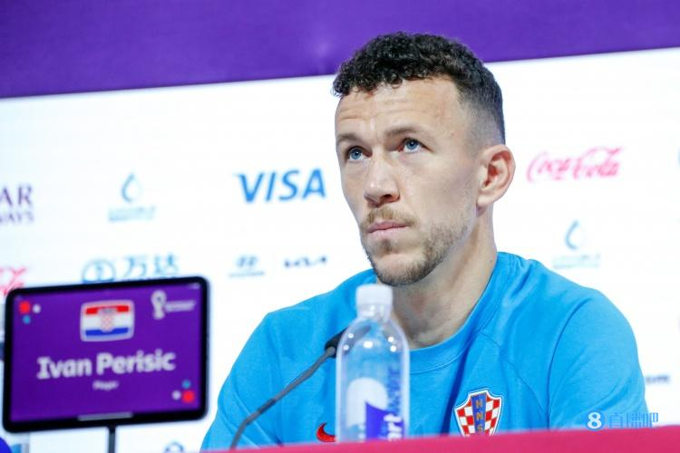

直播吧12月14日讯 据日媒“体育报知”报道，今天凌晨在日本流媒体平台“ABEMA”担任解说嘉宾 的本田圭佑解说了阿根廷与克罗地亚的世界杯半决赛，节目中他谈到了克罗地亚老将佩里西奇。
本田圭佑表示：“不得不说佩里西奇的运动神经真的十分出色，难怪他能够打沙滩排球。个人认为比起梅西和内 马尔，日本的足球少年更应该以佩里西奇为目标，建议在小时候不要只涉猎足球，可以多参加一些其他运动。”
佩里西奇曾以外卡选手的身份，于2017年代表克罗地亚出战国际排联沙滩排球锦标赛。
登录后才能发表评论和回复登录| 注册